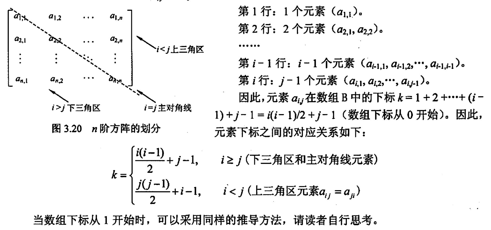
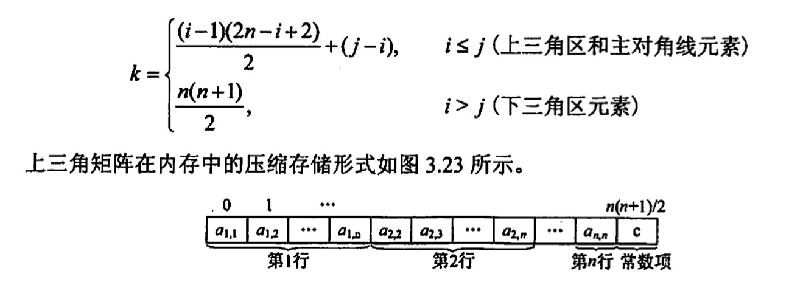
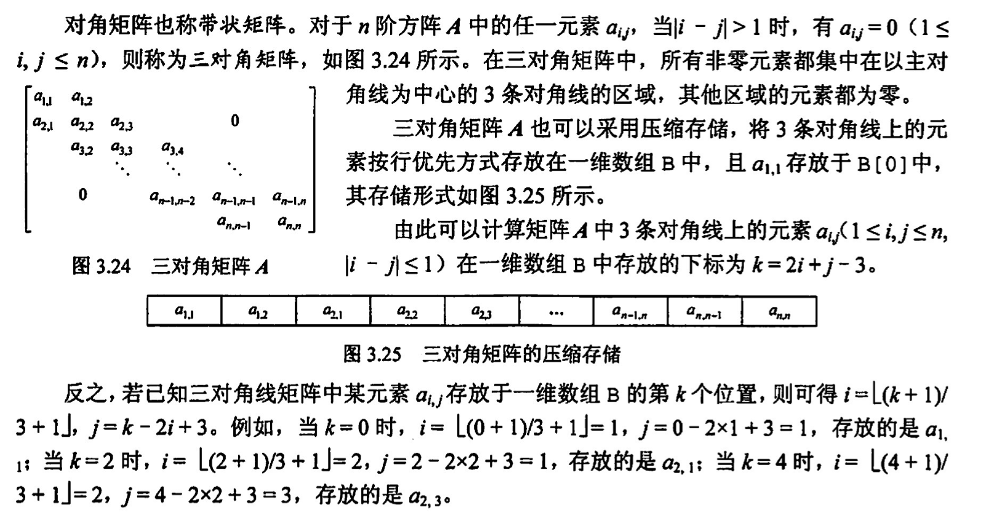
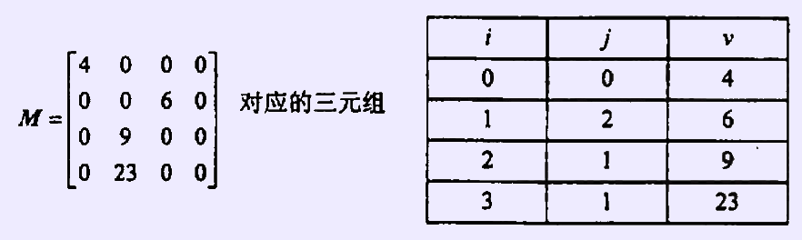

数组和特殊矩阵
2022.09.12
知识点
- 对称矩阵

- 三角矩阵

- 三对角矩阵

- 稀疏矩阵

例题
注意⚠️行优先还是列优先！
- 对特殊矩阵来用压缩存储的主要目的是（ ）。
A. 表达变得简单
B. 对矩阵元素的存取变得简单
C. 去掉矩阵中的多余元素
D. 减少不必要的存储空间
【答案】：D
- 对n阶对称矩阵压缩存储时，需要表长为（ ）的顺序表。
A. n/2
B. nxn/2
C. n(n + 1)/2
D. n(n - 1)/2
【答案】：C
- 有一个nxn的对称矩阵 A，将其下三角部分按行存放在一维数组B中，而A[0][0]存放于B[0]中，则第计i+1行的对角元素A[i][i]存放于B中的（ ）处。
A. (i+ 3)i/2
B. (i+ 1)i/2
C. (2n -i+ 1)i/2
D.（2n- i- 1)i/2
【答案】：A
$$
(i+2)(i+1)/2-1=(i^2+3i)/2
$$
- 在一个二维数组A中，假设每个数组元素的长度为3个存储单元，行下标i为 0~8，列下标j为0-9，从首地址SA开始连续存放。在这种情況下，元素A[8][5]的起始地址为（）。
A. SA+141
B. SA+144
C. SA+222
D. SA+255
【答案】：8*10+6-1 = 85，85*3 = 255，D
- 将三对角矩阵 A[1..100][1..100]按行优先存入一维数组B[1..298]中，A中元素A[66][65]在数组B中的位置k为（ ）。
A. 198
B. 195
C. 197
D. 196
【答案】：65*3-1=194，B
- 若将n阶上三角矩阵A 按列优先級压缩存放在一维数组B[1...n(n+1)/2+1]中，则存放到B[k]中的非零元素a_{ij}的下标i、j与k的对应关系是( )。
A. i(i+ 1)/2+j
B. i(i-1)/2+j-1
C. j(j-1)/2+i
D. j(i- 1)/2+i-1
【答案】：C
- 若将么阶下三角矩阵A按列优先顺序压缩存放在一维数组B[1...n(n+1)/2+1]中，则存放到B[k]中的非零元素a_{ij}的下标ij与k的对应关系是(）
【答案】：k = (n + (n-j+2))(j-1)/2 + i-(j-1) = (2n+2-j)(j-1)/2 + i-j+1
- 【2016统考真题】有一个100阶的三对角矩阵M，其元素ms (1≤ij≤100）按行优先依次压缩存入下标从0开始的一维数组的中。元素m[30].[30] 在W中的下标是()
A. 86
B. 87
C. 88
D. 89
【答案】：29*3-1 = 86，B
- 【2017 统考真题】适用于压缩存储稀疏矩阵的两种存储结构是（）
A. 三元组表和十字链表
B. 三元组表和邻接矩阵
C. 十字链表和二叉链表
D. 邻接矩阵和十字链表
【答案】：A
-
【2018 統考真题】设有一个 12x12的对称矩阵从，将其上三角部分的元素mij(1≤i≤j≤12）按行优先存入C语言的一维数组的中，元秦m[6].[6]在N中的下标是（）.
A. 50
B. 51
C. 55
D. 66
【答案】：(12+8)*5/2 +1 = 51，A
-
【2020 统考真题】将一个 10×10对称短阵 M的上三角部分的元素 m; (1≤i≤i≤ 10）拔列优先存入C语言的一维数组 N中，元素m[7] [2]在N中的下标是（ ）
A. 15
B. 16
C. 22
D. 23
【答案】：m[2] [7] = (1 + 6)*6/2 + 2 = 23，C
-
【2021 统考真题】二维数组 A 按行优先方式存储，每个元素占用1个存储单元。若元素A[0] [0]的存储地址是100，A[3] [3]的存储地址是220，则元素 A[5] [5]的存储地址是(）。
A. 295
B. 300
C. 301
D. 306
【答案】：3n+4-1 = 3n+3 = 120 -> n=39
5n+5 +100= 105+195 = 300，B